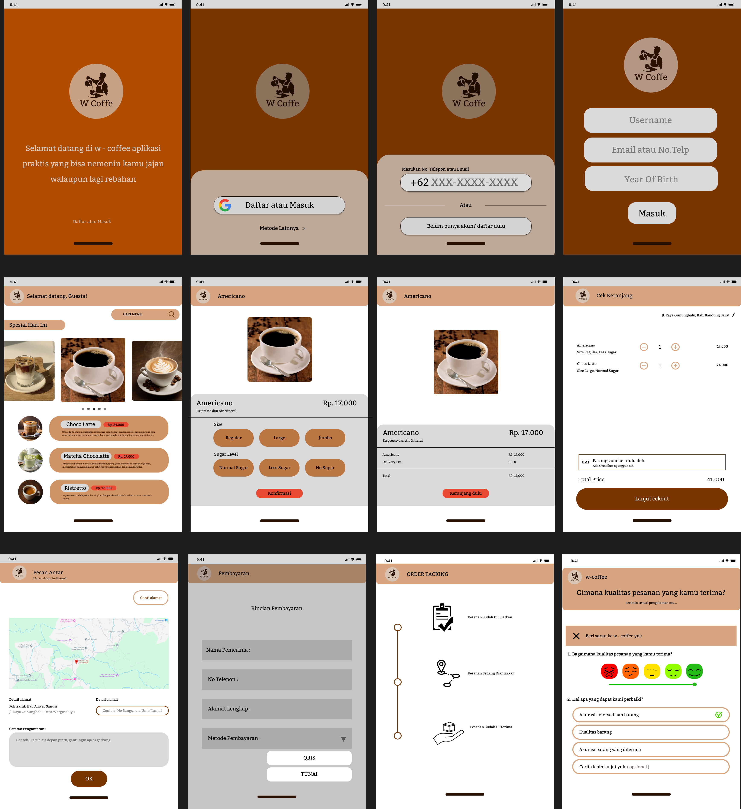

STUDI KASUS UI/UX
W-Coffee: Desain Aplikasi Mobile Coffee Shop
Desain antarmuka aplikasi pemesanan kopi berbasis mobile yang dirancang di Figma. Menyusun struktur kartu menu yang rapi, opsi kustomisasi minuman, serta alur checkout yang ringkas untuk pembeli.